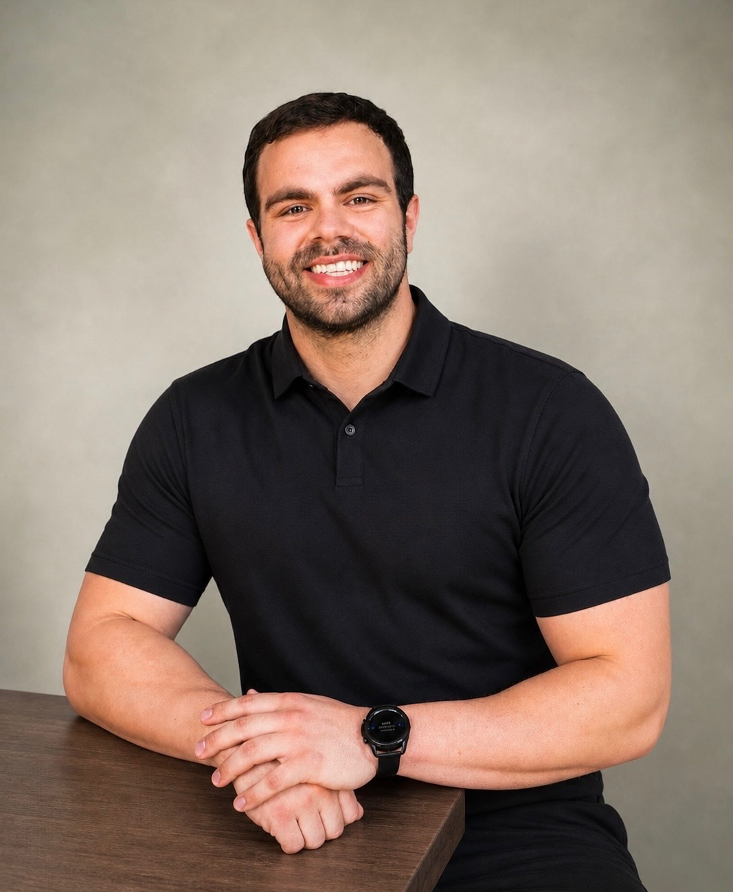

Familiarize
New tasks are introduced through modeling, rhythm, and clear body-based language before independence is expected.
San Diego purposeful motor movement support
Intentional motor coaching for teenagers and adults with apraxia, autism, and disabilities, built around access, athletic patience, and purposeful action.
Built for people whose abilities are often underestimated. Sessions are calm, collaborative, and focused on access: initiating, planning, sequencing, and following through with movement that matters.
The approach
Apraxia can interrupt the bridge between intention and action. A person may understand the task, want to participate, and still need the movement broken down in a way the body can access.
We slow the task down, model what is unfamiliar, and coach the part of the body that needs information. The goal is not to command an outcome; it is to help the body learn the path toward that outcome.
How it works
Purposeful motor coaching turns a vague request into a sequence the body can practice. Instead of only saying, "do a curl," coaching might name the arm position, grip, muscle action, pacing, and direction of travel.
New tasks are introduced through modeling, rhythm, and clear body-based language before independence is expected.
Prompts focus on the part doing the work: hand, elbow, shoulder, trunk, feet, breath, grip, or timing.
Practice stays patient and respectful while the movement becomes more familiar, organized, and reliable.
Services
Get Scrawny currently offers one-on-one motor coaching built around movement access, body awareness, and purposeful practice. This is coaching-based support, not occupational therapy, and can complement the services a person already receives.
Session format
Each appointment is scheduled as a one-hour block with about 45 minutes of active coaching. The remaining time creates space for transition, regulation, communication, and pacing so the work can stay calm, respectful, and responsive.
Practice initiating useful movement through clear setup, modeling, rhythm, and patient coaching of the body part doing the work.
Break unfamiliar actions into approachable parts so the body can rehearse order, timing, direction, and follow-through.
Build sessions around meaningful goals: fitness, daily participation, keyboard access, communication support, or movement confidence.
Who we serve
The studio is designed for autistic people, nonspeaking and unreliably speaking people, people with apraxia or dyspraxia, and people with acquired disabilities.

Meet your coach
Hi, I'm Johnny—though most people know me as Scrawny Johnny.
I've spent my life in motion. I grew up on the soccer field, then transitioned into water polo and competitive swimming through high school and college. When that chapter closed, I didn't step away from performance—I doubled down, developing a deeper, more intentional relationship with strength, conditioning, and overall fitness in the gym.
During college, I worked inside a gym-based supplement shop, where training, nutrition, and community weren't concepts—they were daily practice. That environment shaped how I approach health: not as theory, but as lived experience.
Academically, I studied Kinesiology at Mt. San Antonio College and Speech-Language Pathology at Cal State San Marcos, bridging the gap between physical performance and human communication.
In 2020, I came under the mentorship of Dawnmarie Gaivin, founder of the Speller's Method. I spent nearly five years as a spelling provider at Spellers Center San Diego, supporting nonspeaking individuals in accessing reliable communication.
Today, I bring these disciplines together through Get Scrawny—where athletic structure meets communication access. My work focuses on motor planning, physical coaching, and building systems that support both movement and expression.
What sessions feel like
Orient the body, establish regulation, and show the movement before asking for performance.
Name what the working body part is doing so the path is clearer than the final result.
Repeat with rhythm, patience, and feedback so unfamiliar movement becomes more available over time.
Contact
Share a little about the person, their exercise or movement goals, and what you hope coaching can support day to day.